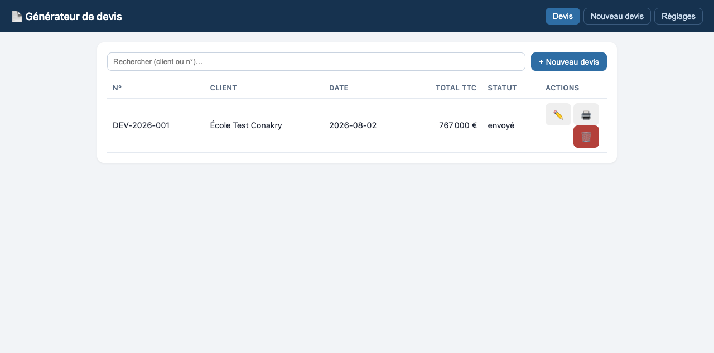
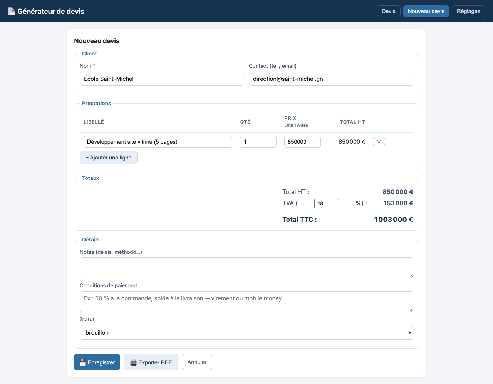
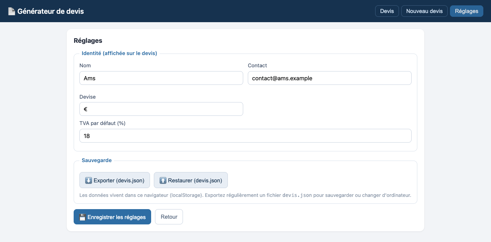
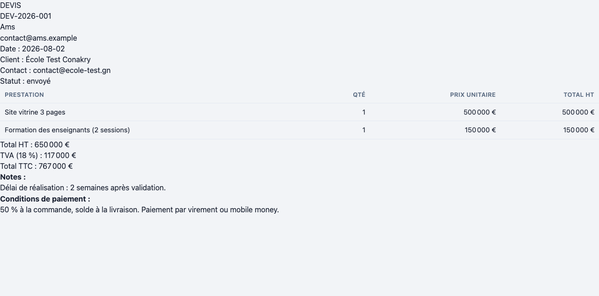

Sommaire
1. Démarrage rapide
Le générateur de devis crée des devis PDF professionnels en moins de 5 minutes : numérotation automatique, calculs exacts (HT / TVA / TTC) et historique consultable. Tout se passe sur votre ordinateur, aucune installation ni connexion internet nécessaire.
index.html (dossier app/). L'application s'ouvre dans votre navigateur (Chrome recommandé).DEV-2026-001…).💡 Astuce : pensez à exporter régulièrement vos devis via Réglages → Exporter pour garder une sauvegarde portable (fichier devis.json).
2. Description des écrans
2.1 Écran « Liste des devis »
Écran d'accueil : tous vos devis, du plus récent au plus ancien. Recherche par client ou numéro, et accès aux actions (ouvrir, PDF, supprimer).

| Élément | Description |
|---|---|
| Barre de recherche | Filtre les devis par nom de client ou numéro (ex. « Conakry », « DEV-2026 ») |
| Colonne N° | Numéro unique automatique du devis (ex. DEV-2026-001) |
| Colonne Total TTC | Montant toutes taxes comprises, recalculé automatiquement |
| Colonne Statut | État du devis : brouillon / envoyé / accepté / refusé |
| ✏️ | Ouvrir et modifier le devis |
| 🖨️ | Exporter le devis en PDF |
| 🗑️ | Supprimer le devis (demande confirmation) |
| « + Nouveau devis » | Créer un nouveau devis |
2.2 Écran « Formulaire de devis »
Écran de création et d'édition : le client, les prestations (lignes), la TVA, les notes et les conditions. Les totaux se mettent à jour à chaque saisie.

| Élément | Description |
|---|---|
| Nom * | Nom du client (obligatoire) |
| Contact | Téléphone / email du client (optionnel) |
| Tableau Prestations | Une ligne par prestation : libellé, quantité, prix unitaire — total HT par ligne calculé |
| « + Ajouter une ligne » | Ajoute une prestation supplémentaire |
| ✕ (sur une ligne) | Retire la prestation |
| TVA (%) | Taux appliqué (pré-rempli avec votre valeur par défaut, ex. 18 %) |
| Total HT / TVA / TTC | Récapitulatif calculé automatiquement |
| Notes | Délais, méthodologie… (affiché sur le PDF) |
| Conditions de paiement | Ex. « 50 % à la commande, solde à la livraison » (affiché sur le PDF) |
| Statut | brouillon / envoyé / accepté / refusé |
| 💾 Enregistrer | Valide et sauvegarde le devis |
| 🖨️ Exporter PDF | Génère le PDF à partir du formulaire en cours |
2.3 Écran « Réglages »
Votre identité (affichée en tête de devis), la devise, la TVA par défaut, et la sauvegarde/restauration des données.

| Élément | Description |
|---|---|
| Nom / Contact | Votre identité affichée sur chaque devis PDF |
| Devise | Symbole monétaire (€, GNF, FCFA…) |
| TVA par défaut (%) | Taux pré-rempli lors de la création d'un devis |
| ⬇️ Exporter (devis.json) | Télécharge une sauvegarde de tous vos devis |
| ⬆️ Restaurer (devis.json) | Recharge une sauvegarde (sur ce poste ou un autre) |
| 💾 Enregistrer les réglages | Applique et sauvegarde vos réglages |
2.4 Document PDF exporté
Le devis exporté en PDF : en-tête (votre identité, numéro, date, client, statut), tableau des prestations, totaux HT/TVA/TTC, notes et conditions. Format A4, prêt à envoyer.

3. Parcours utilisateur (workflows)
Parcours 1 — Créer un devis de A à Z
index.html)Parcours 2 — Modifier un devis existant
Parcours 3 — Suivre le statut d'un devis
Parcours 4 — Sauvegarder et changer d'ordinateur
devis.json est téléchargé4. Questions fréquentes
L'application ne s'ouvre pas sur mon ordinateur ?
Vérifiez que vous double-cliquez bien sur index.html dans le dossier app/. Utilisez Chrome ou Edge pour le meilleur rendu du PDF.
Où sont stockées mes données ?
Dans votre navigateur (localStorage). Elles restent sur votre machine — c'est volontaire (pas de cloud). Pensez à exporter régulièrement le fichier devis.json pour sauvegarder.
Comment changer la devise (€ → GNF) ?
Réglages → champ « Devise » → saisissez le symbole souhaité → « 💾 Enregistrer les réglages ».
Puis-je créer une facture à partir d'un devis ?
Pas encore — c'est prévu dans une version future. Le devis accepté servira de base.
Un devis supprimé peut-il être récupéré ?
Uniquement si vous avez exporté un devis.json avant la suppression (Restaurer le fichier).
5. Support
Besoin d'aide ou d'une évolution ? Contactez votre référent.
Version : 1.0 · App locale sans dépendance · Projet : générateur de devis (AAS V0.2.2, 2026-08-02)